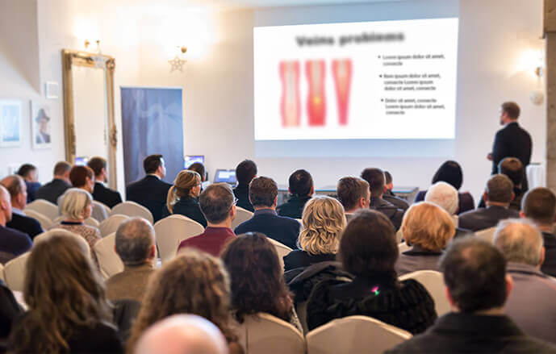

Odstranění bolesti, otoku a necitlivosti
Konec éry křečových žil!
Revoluční kúra českého profesora přírodním způsobem
odstraňuje křečové žíly za 28 dní

Způsobí nová metoda likvidování křečových žil, že budou operace zbytečné? Slavní odborníci ve
věcech flebologie (oblasti zabývající se onemocněním žil) nemají pochybnosti, že ano. Společně s
vyvinutím Čechem přírodní veno-cirkulární formule, došlo k dlouho očekávanému průlomu v boji s
žilní nedostatečností.
Už více než 14 tis. uživatelů kúry se zbavilo křečových žil,
metličkových žilek a otoku za 28 dní. Ve výsledku získalo lehké a zdatné nohy a hladkou kůži
jako ve věku 20-25 let. Dokonce ti, jejichž lýtka a stehna byla v 80 % pokrytá degeneračními
změnami. Jak je to možné?
Prof. Hubert Slanský (odborník na oběhovou soustavu) se rozhodl zachránit svou maminku proti žilní nedostatečnosti, která ji prakticky znemožňovala chůzi – toto byl začátek revoluce v oblasti flebologie. Profesor, po 11 měsících laboratorních testů, vypracoval přírodní, bezpečnou a snadno použitelnourecepturu odstraňující křečové žíly.
Profesionální lékařské časopisy už nazvaly tuto kúru „pionýrským úspěchem ve flebologii“, a profesor za svoje úspěch získal hodně prestižních ocenění. Díky působení jeho formule, dokonce osoby, které trpí z důvodu pokročilé žilní nedostatečnosti nohou, mohou zcela zlikvidovat křečové žíly, obnovit správný oběh v nohách a jednou navždy zapomenout na otok a bolest.
„Tradiční způsoby odstraňování křečových žil jsou peníze vyhozené oknem!“ Jaké důvody vedou k takovým domněnkám?
Tato slova potvrzuje už přes 14 tisíc spokojených uživatelů profesorovy véno-cirkulární receptury, kteří už se zbavili křečových žil bez použití skalpelu. Proto jsme se rozhodli si posvítit na tradiční způsoby boje s tímto problémem. A důkladněji zjistit, jaké jsou jejich vády a proti čemu musí denně bojovat osoby, které se snaží zbavit křečových žil. Toto jsou závěry:
-
Operace je nebezpečná
Podívejte se na své nohy a všimněte si, v kolika místech se vyskytují křečové žíly, modřiny a metličkové žilky. Teď si představte, že všechna ta místa budou rozřezávány skalpelem… Je to obrovský zásah do těla, který může skončit tragickými komplikacemi. Nemluvě o tom, že zotavování po takovým zákroku může znamenat i 6 měsíců utrpení…
-
Laser je absurdně drahý
Zásah laserem do jednoho změněného místa stojí dokonce i 7500 Kč. Aby se dalo čekat jakékoliv efekty, je třeba provést alespoň 5 takových zákroků… Kdo na to má? Zvlášť, že účinnost odstraňování křečových žil laserem je sotva 30 % (bez žádné záruky, že se změny nevrátí!).
-
Domácí způsoby nefungují na už vzniklé křečové žíly
Způsoby jako je třeba studená sprcha, nebo si dát nohy nahoru, můžou omezit riziko vzniku křečových žil, neodstraní ale ty, které už vznikly. Pravda je, že když se objeví jedna křečová žíla, určitě přibudou i další – riziko vyvinutí pokročilé žilní nedostatečnosti je až 89 %.
-
Tlakové obvazy můžou způsobit hrozné komplikace
Používání tlakového obvazu je mnohem složitější než tvrdí výrobci, kteří jich chtějí co nejvíc prodat. Pravda ale je, že nesprávné naložení tlakového obvazu nebo jeho přemístění při chůzí způsobuje změnu tlaku. V tom případě – a nelze se tomu vyhnout – používání obvazu bude mít opačný výsledek – ucpání, které vede k odumření žil.
-
Masáže můžou poškodit cévy
Máte-li křečové žíly, víte jak citlivé jsou oblasti vašeho těla dotčené tímto problémem. Je potřeba skutečně zkušeného a kvalifikovaného odborníka, aby byla zprůchodňující žíly masáž správně provedena. Většina masérů o tom nemá ani ponětí! Proto riskujete a můžete tak jedině zpomalit další vývoj nemoci. Jeden nesprávný pohyb maséra ho ale může hodně zrychlit…
Právě proto véno-cirkulární kúra prof. Slanského je skutečná revoluce v boji proti křečovým žílám
Tradiční metody odstraňování křečových žil jsou buď neúčinné, anebo moc drahé, anebo také nebezpečné. Kúra prof. Slanského však obnovuje buňky oběhové soustavy, zpevňuje žíly a zlepšuje krevní oběh účinně, bezpečně a přírodním způsobem. Látky, které obsahuje, mají silně regenerační vlastnosti. Každodenní používání těchto látek vrací správnou práci oběhové soustavy dokonce i lidem, kteří křečovými žíly trpí už 30 let nebo déle.
Odstranit křečové žíly a zabránit jejich návratu teď může každý
Kúra už je dostupná v maloobchodním prodeji pod názvem Varicosen. Receptura má podobu gelu. Její používání je pro organismus naprosto bezpečné, což dokázaly dodatečné testy francouzského výzkumného ústavu v Lyonu. Tyto výzkumy také dokázaly, že kúra má více než 98% účinnost. Díky ní osoby ve věku 38-93 let za sotva 28 dnů dosáhly spektakulárních výsledků v odstraňování žilní nedostatečnosti nohou. Bez ohledu na věk, příčinu a dobu trvání problémů s křečovými žilami.
Tyto lidé se hned po použití receptury zbavili otoku a pocitu tíhy a zlepšili práci cév. Díky tomu zvýšili průchodnost žil až o 91 % a začali pozorovat, jak se jejich kůže na nohou stává čím dál tím hladší a neestetické křečové žíly, pavoučí žilky a modřiny mizejí. Během dalších dnů kúry si tyto lidé zpevnili cévní stěny a zprůchodnili žíly, díky čemu zapomněli na bolest a tlak. Pak začal v jejich cévách proces intenzivní regenerace, záněty byly odstraněny a deformace zvráceny.
V důsledku zregenerovali a vrátili zpět ke správné práci až 87 % cév dotčených deformitou, zbavili se křečových žil a metličkových žilek a získali 3krát více energie. To ale není všechno. Po 28 dnech kúry účastníci výzkumu shodně prohlásili, že se díky skvělému krevnímu oběhu cítí plní sil a vitality jako ve věku 20-25 let a po křečových žílách není ani stopa! Účastníci výzkumu navíc konstatovali, že cítí obrovskou úlevu, protože se nemusejí stydět za ošklivé změny na nohou.
Zdokumentované efekty kúry hovoří samy za sebe:
3 krát lepší krevní oběh
Zpevnění cévních stěn
Celkové zmizení křečových žil
1. týden
2. týden
3. týden
4. týden
1. týden – odstranění bolesti, otoku a necitlivosti, pocit „lehkých nohou“
2. týden – zprůchodnění cév, 3 krát lepší krevní oběh
3. týden – zpevnění cévních stěn o 400 %
4. týden – celkové zmizení křečových žil, zablokování možnosti jejich návratu v budoucnu
Paní Alžběta Nesvatbová (73 let) z Kutné Hory je jedna z prvních osob v České republice, které použily Varicosen:

„Problémy s křečovými žilami se u mě objevily dávno, protože už po 40. Myslela jsem si, že je to normální – stárnu, krev hůře proudí, takže se i něco dělá na nohách. A po pár letech začala nepříjemná bolest a otok, a nohy pokryly fialové, pokroucené žížaly. Ale nejhorší bylo to, že jsem mohla sotva chodit. Styděla jsem se, když lidé s odporem odvraceli zrak při pohledu na moje nohy. Zkoušela jsem ty lasery, které prý odstraňují křečové žíly. Utratila jsem majetek, protože částku rovnající se mým 3 důchodům! Ale tyto jenom zhoršily problém, protože moje nohy byly doslova sinalé, a žíly bolely dokonce při lehkém doteku! Operaci jsem nechtěla. Jak to, aby mi rozřezali skalpelem celé nohy? Včas jsem se dozvěděla o Varicosen. Teď už vím, že kdybych nevyužila tuto kúru – udělala bych životní chybu. Lýtka nebyla pod křečovými žilami a metličkovými žilkami vidět, a stačily 4 týdny a nohy mám hladké jako teenager! Po otoku a bolesti nezůstala také ani stopa, a i rozpoložení je mnohem lepší – odborník řekl, že se mi už neusazuje krev v nohách, ale volně proudí. Konečně mohu normálně jít mezi lidi, a i delší procházky už nevyvolávají bolest. Je to tak příjemné znovu se projít v parku nebo vzít vnučky na zmrzlinu. Velké díky.“
Proč utrácet majlant za neúčinné metody, když se křečových žil lze zbavit přirozeně, úsporně a jednou provždy?
Účinnost Varicosen byla bezpochybně prokázána francouzským výzkumných ústavem v Lyonu. Prof. Slanský je neustále nominován na ceny za vědecké objevy, včetně Ceny Mezinárodního sdružení flebologů.
Dobrá zpráva je taková, že je možno získat Varicosen za účast ve slevovém klubu s finančním příspěvkem se slevou levněji. Dofinancování přísluší všem osobám narozeným po 1938 roce. Speciální nabídka je platná do konce . Kúru je možno získat prostřednictvím níže uvedené stránky.


Komentáře
Přečtěte si komentáře ke článku „Konec éry křečových žil! Revoluční kúra…“
Tom 2020
a říká se že češi nemají úspěchy ve světovém měřítku. skvělý úspěch srovnatelný s Mendlem. Bravo pro našeho rodáka
eva 2020
já jsem tento gel použila, získala jsem je za účast ve slevovém klub staly tak málo peněz a zbavila jsem se všech křečových žil! cítím se jako nová. vřele doporučuji
Martina 2020
něco tady nehraje. Proč akorát rovních 28 dní a křečáky zmizí? zní to jako lež
žofie 2020
@Martina Vždycky když nějaká výzkumná instituce provádí klinické testy nějaké látky, uvádí výsledky v časovém rámci. Takové jsou pokyny pro výzkum. Průměrný výsledek testované skupiny byl asi 28 dní!!! je to velkolepý výsledek. Kromě toho píše se rovných, a ne rovních…
Josef 2020
vážení. Řeknu svůj názor, protože jsem se pokročilou žilní nedostatečností trápil skoro 6 let. Léta práce jako sekuriťák ve stoje udělaly své a žíly prostě nevydržely neustále zatížení. Na laserové terapie a obvazy jsem utratil celkem 30 tisíc Kč, což stejně není moc, i když pro důchod sekuriťáka v samoobsluze to není jen tak, znáte to. Jen jsem se nesmyslně vystavil riziku a udělala se mi nějaká podivná výražka, zatímco křečáky zůstaly beze změn. Když jsem si chtěl v létě obléct kraťasy, vnuky se mě bály. Říkaly, že děda má pod kůži červy! A před třemi týdny jsem od dcery dostal tento přípravek a pořád tomu nemůžu uvěřit. Jako bych měl nové nohy!! nevím jestli to funguje na každého, na mě to zabralo! ono to stojí za to si to zkusit
Ondřej 2020
Také jsem použil Varicosen a hodně jsem tím získal. Používám teprve druhý týden, ale už mi zmizely žilky a ty nejhorší křečáky jsou o polovinu menší. Taky už nemám znecitlivěné nohy a odpoledne neotékají. Konečně můžu žít jako normální člověk
marie 2020
když jsem tuto stránku navštívila, nečekala jsem, že si přečtu takové zázraky. V tom případě tuto kúru musím mít. Už mám plné zuby odporných, bolavých a oteklých lýtek. Zakrývám křečáky kalhotami nebo dlouhými sukněmi, ale vždyť to občas nejde, kromě toho zase tak stará nejsem abych chodila v sukních do země!!. Konečně se toho zbavím-SKVĚLE!
Helena 2020
dělám prodavačku, takže samozřejmě práce ve stoje. A od té doby, co mám ty odporné křečáky musím si každou chvíli sednout, protože mě tak bolí, lékař mi říká "najdete si jiné zaměstnání", to se lehce řekne, snad nezná život ! Jen trpím a stydím se a peníze spokladen je třeba brát! Vrátili jste mi naději, konečně proměním svůj život, děkuji, děkuji!!! :)
Michal 2020
@Helena zrovna by sis mohla zkusit nějakou jinou práci. Mšá ale pravdu, budeš cítit obrovský rozdíl až projdeš kúrou Varicosen.Já měl křečáky už v hodně pokročilém stavu tak jsem musel používat až měsíc a půl, aby všechny zmizely. jsem ale šťastný vrátil jsem se k aktivnímu životu a nohy už mě nebolí. Přeju Ti to samé. pozdravuju
Anna 2020
Moje maminka už je dost stará tak mám dotaz na ty kteří používali, kolik je Vám let, jestli jsou tady starší lidé kolem 80 let nebo jejich příbuzní/známí? Rada bych věděla zda je pro mámu nějaká šance. Pořád si stěžuje jaký to má těžký, jaké hrozné křečáky, co všechno musela prožít. Hrůze, ale je mi jí fakt líto. Odpovězte prosím. Anna
David 2020
@Anna u mě jsou křečové žíly dědičné používal jsem já a můj tatínek, je mu 93 let. Zlepšilo se mu už po třech týdnech. Je moc spokojený hlavně že mu neotékají nohy. Takže doporučuju i pro vaši maminku
Anna 2020
@Daniel děkuji to hodně za odpověď. v tom případě mámě daruji tu kúru.
Zita 2020
taky jsem používala, omladila jsem si nohy minimálně o 15 let :) posílám pozdrav a doporučuju
eva 2020
nejraději bych to hned použila, ale mám obavy, jestli to působí. Utratila jsem už dost za neúčinné způsoby
eva 2020
A!! právě jsem si přečetla že na tu kúru přísluší záruka trojité spokojenosti, v tom případě bez obav. Přesvědčím se na vlastní kůži, jen aby to pomohlo :)
Antonín 2020
jsem dost mladý (36 let) a zdatný, pracuju ale v kanclu kde furt sedím takže používám Varicosenpreventivně. Protože předchází problémům s krevním oběhem a přetížení nohou. Takže pokud někdo pracuje v sedě tak doporučuju používat taky
felix 2020
právě čekám na zásilku s kúrou, brzy napíšu o efektech